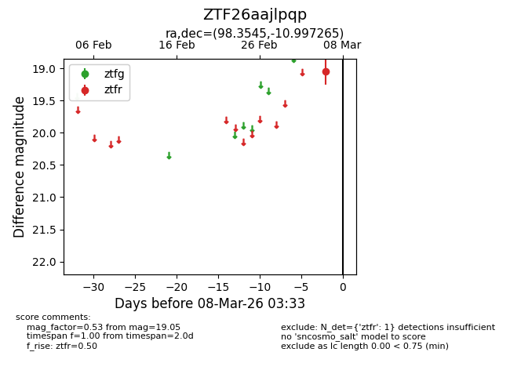
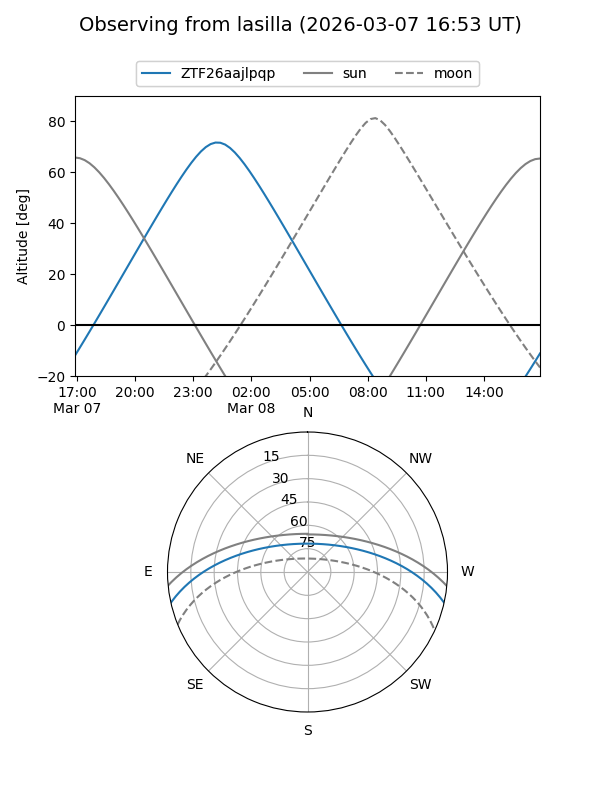
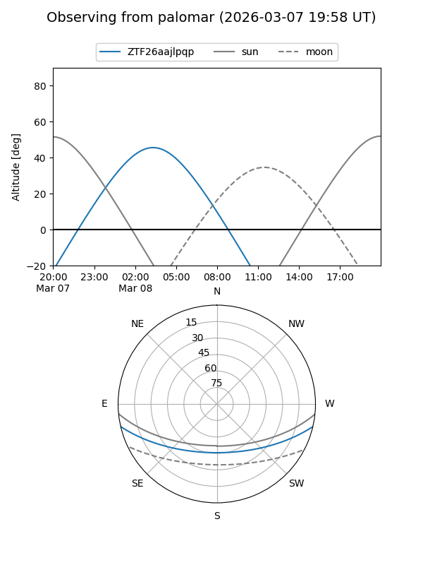

ZTF26aajlpqp
Target ZTF26aajlpqp at 2026-03-08 03:34
Aliases and brokers:
FINK: link
Lasair: link
ALeRCE: link
alt names
ZTF26aajlpqp (ztf,fink_ztf)
Coordinates:
equatorial (ra, dec) = 98.3545,-10.99727
equatorial (HMS+DMS) = 06:33:25.09,-10:59:50.15
galactic (l, b) = (220.7645,-8.95189)
Flags:
Photometry:
last ztfr=19.05
1 ztfr detections
Lightcurve

Visibility


Additional plots